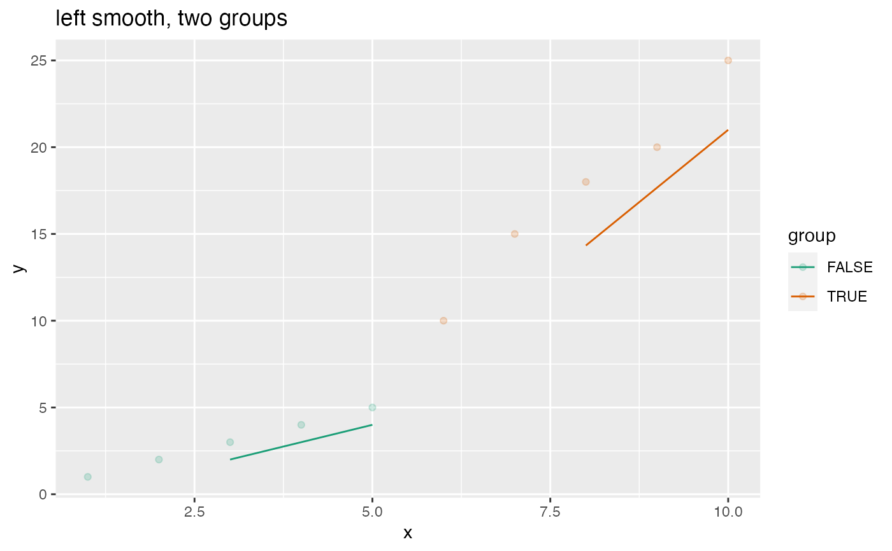

Plot a scatter plot with smoothing line.
Source:R/ConditionalSmoothedScatterPlot.R
ConditionalSmoothedScatterPlot.RdPlot a scatter plot with a smoothing line; the smoothing window is aligned either left, center or right.
ConditionalSmoothedScatterPlot( frame, xvar, yvar, groupvar, title, ..., k = 3, align = "center", point_color = "black", smooth_color = "black", palette = "Dark2" )
Arguments
| frame | data frame to get values from |
|---|---|
| xvar | name of the independent column in frame. Assumed to be regularly spaced |
| yvar | name of the dependent (output or result to be modeled) column in frame |
| groupvar | name of the grouping column in frame. Can be NULL for an unconditional plot |
| title | title for plot |
| ... | no unnamed argument, added to force named binding of later arguments. |
| k | width of smoothing window. Must be odd for a center-aligned plot. Defaults to 3 |
| align | smoothing window alignment: 'center', 'left', or 'right'. Defaults to 'center' |
| point_color | color of points, when groupvar is NULL |
| smooth_color | color of smoothing line, when groupvar is NULL |
| palette | name of Brewer palette, when groupvar is non-NULL (can be NULL) |
Details
xvar is the continuous independent variable and yvar is the dependent binary variable.
Smoothing is by a square window of width k.
If palette is NULL, and groupvar is non-NULL, plot colors will be chosen from the default ggplot2 palette.
Setting palette to NULL
allows the user to choose a non-Brewer palette, for example with scale_fill_manual.
Examples
y = c(1,2,3,4,5,10,15,18,20,25) x = seq_len(length(y)) df = data.frame(x=x, y=y, group=x>5) WVPlots::ConditionalSmoothedScatterPlot(df, "x", "y", NULL, title="left smooth, one groups", align="left")WVPlots::ConditionalSmoothedScatterPlot(df, "x", "y", "group", title="left smooth, two groups", align="left")